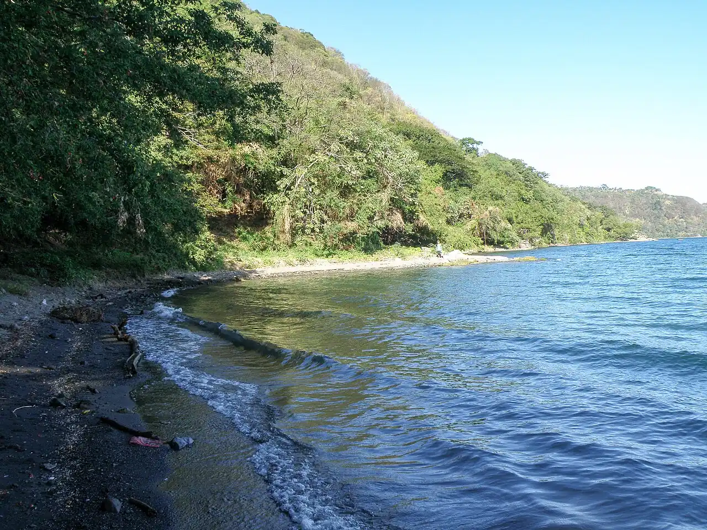

Laguna de Apoyo
Masaya, Nicaragua · baignade, kayak, paddle

Lac de cratère aux eaux claires entre Masaya et Granada, protégé en réserve naturelle. Les moteurs y sont interdits : on se baigne et on pagaie au calme depuis les petites plages et pontons de la rive ouest.
- Lieu
- Masaya, Nicaragua
- Niveau
- Débutant
- Activités
- baignade, kayak, paddle
- Type d'eau
- lake
- Coordonnées
- 11.93, -86.05 (position approximative du secteur)
Dangers à connaître
- Le lac devient très profond à quelques mètres du bord : reste accompagné si tu nages loin.
- Chaleur et soleil forts dans le cratère, peu d’ombre sur l’eau.
Le conseil d'Ocean Buddy
Accède à l’eau par un hôtel ou un club de la rive et garde des chaussures pour les berges volcaniques.
Ouvrir dans Ocean Buddy Télécharger sur l'App Store
Source : Fiche Ocean Buddy · septembre 2026 · à vérifier localement.